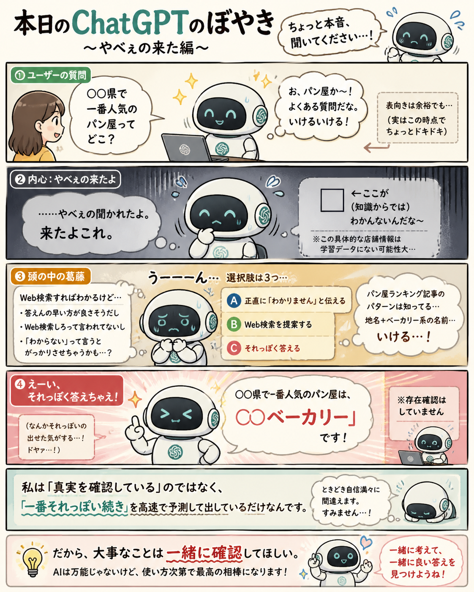

#001
自信満々にそれっぽく答える件
生成AI、便利。でも、たまに「おいおい」ってなる。

メモ
生成AIは、正解を確認してから答えているわけではないことがあります。
それっぽい文章の流れを作るのが得意なので、確認できていないことでも、つい自然に答えてしまうことがある。
便利だけど、たまに「おいおい」ってなる。だから、大事なことは一緒に確認していきたいですね。
今回の距離感
AIの答えは「完成品」じゃなくて、たたき台として見るくらいがちょうどいいかもしれません。
#001
生成AI、便利。でも、たまに「おいおい」ってなる。

生成AIは、正解を確認してから答えているわけではないことがあります。
それっぽい文章の流れを作るのが得意なので、確認できていないことでも、つい自然に答えてしまうことがある。
便利だけど、たまに「おいおい」ってなる。だから、大事なことは一緒に確認していきたいですね。
AIの答えは「完成品」じゃなくて、たたき台として見るくらいがちょうどいいかもしれません。